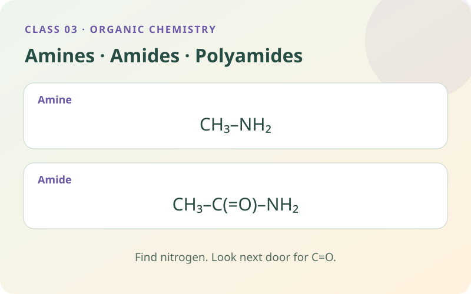

Follow nitrogen’s electrons to distinguish an amine from an amide, then build the amide links found in nylon and proteins.
Read → model → explain6 self-study checksUse the apparatus directly

By the end of this class, you should be able to…
Distinguish amines from amides by reading nitrogen’s neighbours.
Explain why a simple amine can accept H⁺ and why an amide is much less basic.
Identify suitable polyamide monomers and count links in a finite chain.
01
Meet nitrogen and its lone pair
Nitrogen, N, is the new atom in this class. A simple neutral nitrogen centre commonly has three covalent bonds and one lone pair: two outer-shell electrons not used in those bonds. Covalent bonds are shared electron pairs. A lone pair can sometimes form a bond to an electron-pair acceptor.
In a primary amine such as methylamine, CH₃NH₂, the nitrogen is attached to a carbon group and two hydrogens. Other amines can have more carbon groups on nitrogen, so –NH₂ is not the only possible amine pattern. Here we begin with primary amines and compare the atoms directly next to nitrogen.
Remember and explain whyFind N, then check its neighbours. Not every nitrogen-containing compound is an amine.
02
Why a simple amine can act as a base
A Brønsted–Lowry base is a proton acceptor. A proton in these acid–base equations is H⁺. The available lone pair on methylamine can form a bond to H⁺: CH₃NH₂ + H⁺ → CH₃NH₃⁺. The product is the methylammonium ion. Its positive charge belongs to the whole ion.
In water, only a proportion of simple amine molecules accept a proton from water: CH₃NH₂ + H₂O ⇌ CH₃NH₃⁺ + OH⁻. This gives a weakly basic solution. Weak describes the extent of reaction in water, not how concentrated the solution is. With hydrochloric acid, the resulting ions can form a methylammonium chloride salt.
Remember and explain whyAmine: an available lone pair can welcome H⁺. Remember the new positive charge.
03
Amides: put the carbonyl next to nitrogen
An amide contains a nitrogen directly bonded to a carbonyl carbon: –C(=O)–N–. A primary example is ethanamide, CH₃CONH₂, more explicitly CH₃–C(=O)–NH₂. The carbon in the carbonyl is included in the name’s carbon count, so ethanamide has two carbons.
In an amide, nitrogen’s lone pair interacts with the neighbouring carbonyl system. Delocalised means the electrons are spread across more than one atom rather than confined to one local pair. The pair is therefore less available to accept H⁺. Amides are much less basic than comparable amines. The explanation depends on connectivity; both molecules can contain an NH₂ group yet belong to different families.
Remember and explain whyAmide = amine-like N beside a carbonyl. The neighbouring C=O changes the electron behaviour.
04
Form an amide link under appropriate conditions
A carboxylic acid contains –COOH. An amine group and an acid group can be converted into an amide link under suitable condensation conditions, with net water loss: –COOH + H₂N– → –CONH– + H₂O. The link contains C(=O)–N; it is not an ester’s C(=O)–O connection.
Simply mixing an ordinary carboxylic acid and amine at room temperature often gives an ammonium carboxylate salt through an acid–base reaction: the acid transfers H⁺ to the amine, producing oppositely charged ammonium and carboxylate ions. Forming the amide requires suitable activation, dehydration or heating conditions. Our draggable group model represents the net bond-forming change under appropriate conditions; it does not claim that dropping any two room-temperature solutions together instantly makes nylon.
Remember and explain whySalt formation and amide formation are different processes. Conditions matter.
05
Two-ended monomers can build a polyamide
A diamine has two amine groups, and a dicarboxylic acid has two carboxyl groups. “Di-” means two. A monomer is a small starting molecule; a polymer is a much larger chain built by linking many units. Complementary reactive ends allow repeated amide-link formation, producing a polyamide.
In the acid + diamine route shown, each new amide link releases water. A single finite, unbranched, open chain made from N starting molecules has N − 1 links. N counts monomer molecules, not atoms. For n diamines and n diacids, there are 2n starting molecules, 2n − 1 links and 2n − 1 waters, leaving two terminal groups. This count excludes rings and branches; repeat-unit notation commonly omits end groups.
Remember and explain whyTwo ends allow growth. In one open chain, links = monomer molecules − 1.
06
From nylon ropes to peptide links in proteins
Nylon-6,6 is a polyamide made using a six-carbon diamine and a six-carbon diacid. For the diacid, remember to count the two carboxyl carbons. Attractions between suitable amide groups on neighbouring chains, including hydrogen bonds (attractions involving H attached to N or O and a nearby N or O lone pair), contribute to useful fibre properties. Chain structure and processing also influence strength; no single bond type explains every material property.
Proteins contain amide connections called peptide bonds between amino-acid residues. An amino acid has both an amine-containing group and a carboxyl group, so its connectivity differs from a separate diamine + diacid pair. Cells form proteins through controlled biochemical machinery; dragging groups in a model illustrates the linkage rather than reproducing the full cellular process. Compare nitrogen’s neighbours first, then use the polyamide bench to build and inspect a link.
Remember and explain whyEster bridge: O. Amide bridge: N. The whole chain keeps repeating the characteristic link.
This is a structural group model. The source groups and H + OH packet can be dragged directly on the bench; you can also select the object and then its destination, or use the keyboard. Help with this step demonstrates one action. Amide formation represents suitable activated or dehydrating conditions; ordinary acid–amine mixing can instead form a salt.
07
Choose an investigation
Make a prediction, choose the conditions and use the apparatus on the bench. Drag equipment into place, turn switches and watch the reaction. Need a hand? Use Help with this step. Record your evidence before answering the explanation question.
Switch investigations here. Your progress and notebook stay available while this page is open.
Preparing your experiment…
VIRTUAL LAB
YOUR BENCH
Choose conditions Sample, quantities and equipment
Use the equipment directly on the bench. Drag, click or tap the highlighted apparatus.
YOUR EVIDENCE
Record and compare your observations.
Observations from the current experiment
Your notebook stays while you explore this page. Reloading clears it. Practical notes and lesson checks are not sent to the teacher.
08
Use the evidence
09 · CHECK THE IDEAS YOU JUST LEARNED
Practise this class.
Every question uses an idea explained above. Try it, read the feedback and return to a worked example if needed. These short practice checks and the practical notebook stay on this page; they are separate from recorded Test yourself sessions.
Use the six practice questions above for this class. Once you have studied the Organic Chemistry unit, use its full revision simulator. Its 80 questions also cover hydrocarbons, combustion, cracking and addition polymers. Read the unit preparation and worked examples before attempting unfamiliar areas. Test yourself uses the existing teacher recording connection.